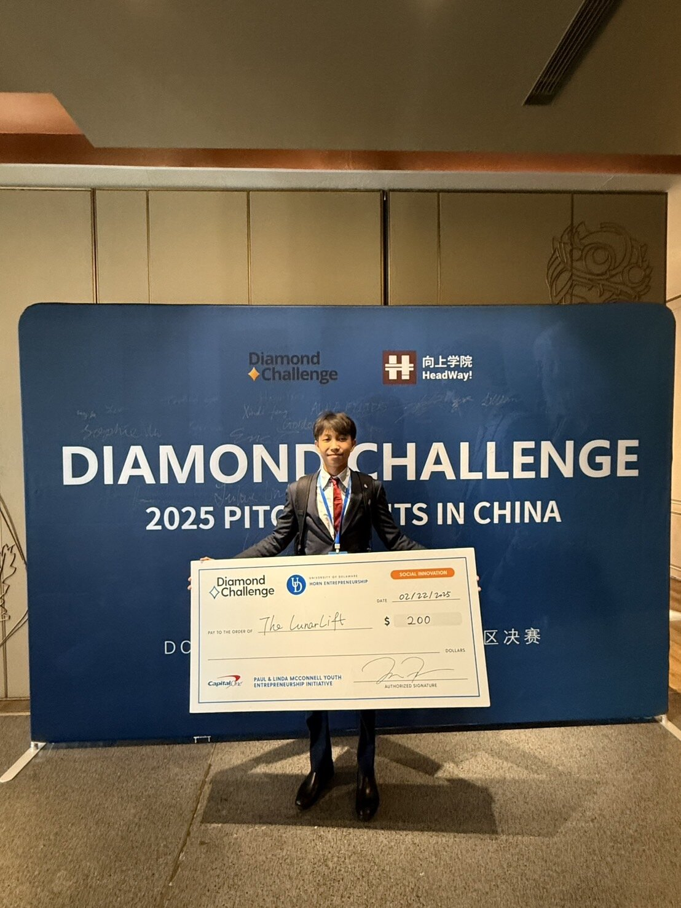
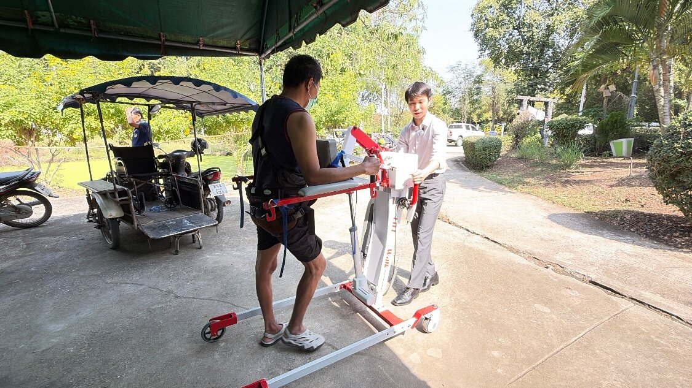
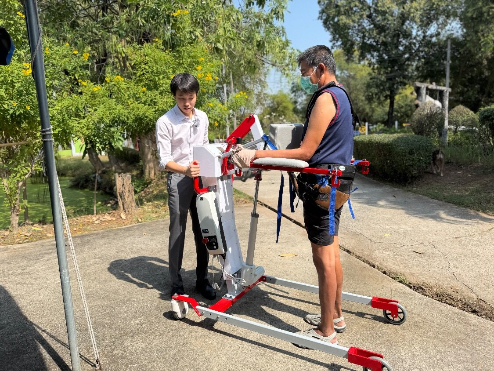
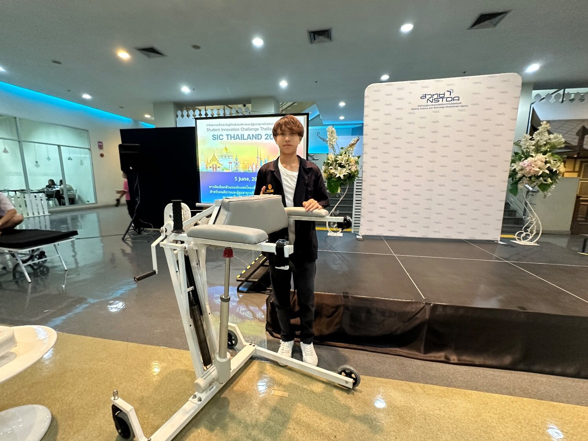
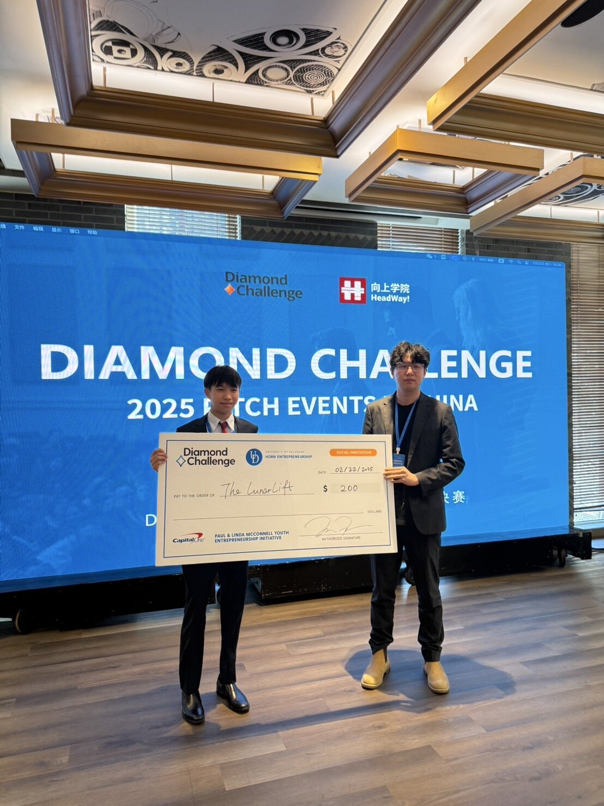

Diamond Challenge
- Global Finalist
- First Place, Beijing stage

Hi! I'm
(but everyone calls me Marc)
I'm a junior at Shrewsbury International School Bangkok. I'm also an aspiring researcher, a sustainable clothing brand owner, an environmentalist and a budding economist, and I'm still adding to that list...
What ties it all together is a simple question: why should good healthcare cost so much? I design healthcare solutions that work as well as what's on the market, for a fraction of the price, because I believe effective care shouldn't depend on what you can afford.
This page walks you through what I've built so far. Enjoy!
Founder, Inventor
After my grandfather's stroke left him struggling to walk, I found that rehab devices with body weight support were either in rehab centres hours from the countryside or cost at least $5,500 for home use. LunarLift brings body weight support and fall protection into the home for $650. I trialled it with 20 patients at 3 rural hospitals and worked with Retail Business Solutions on a licensing agreement to distribute it to hospitals, researching FDA registration pathways and competing devices along the way.




Awards:
Founder, Inventor, Researcher
Living with eczema, I used to wake up to bloodstained sheets after nights of scratching. Boxing gloves helped my wounds heal but trapped bacteria. Embrace Gloves are ventilated anti-scratch gloves with a hard inner shell made from recycled saline bottles from Chonpratan Hospital, wrapped in fabric coated with silver nanoparticles green-synthesised from banana pseudostem. Built-in sensors count scratches and send them to my Scratch Guard app, giving doctors an objective measure instead of a visual guess. Over 500 pairs have been sold to 3 hospitals, at $35 compared with $65 for the cheapest antibacterial alternative.
Awards:
Founder
Village shops in Bang Khlong Han Daeng, Chachoengsao, believed they were losing customers to cheaper supermarkets in town. My expenditure survey of 80 households, a quarter of the village, found otherwise: people shop in town on a few predictable paydays when they are already there, and each shop had about ฿55,000 tied up in customer tabs. I turned the findings into six pieces of advice, from stocking bulk goods before paydays to not cutting prices, and set five shops up on Shopee and Lazada. Within three months, their profits rose by over 12%. I also taught basic economics at the village school.
Founder
Ecoscope began with a painting in my family's home of a Schomburgk's deer, an animal found only in the wetlands where Bangkok now stands. Hunting and rice farming wiped it out, and the last known one died in 1938. Almost no one I asked had heard of it. Ecoscope keeps today's endangered animals, like the Siamese crocodile, the pangolin and the Asian elephant, from fading from view the same way, printing them on everyday clothing made from banana and pineapple-leaf fibres and recycled PET. Across 7 pop-up stores we've sold 200+ pieces and earned over $2,000, with profits going to animal shelters and our artisans.
Founder
I founded a 10-member club where students design their own clothing pieces while educating the wider school about the harms of fast fashion.
Schweitzer House
As House Captain, I led around 150 students through inter-house events including House Music and House Filmfest, and we won House Football.
Year 12
I gathered my year group's views on school policy and helped secure more support for students preparing for the SAT.
Midfielder
I play midfield for Shrewsbury's varsity football team, finishing 2nd in the Bangkok Community Cup and 2nd in BISA.
